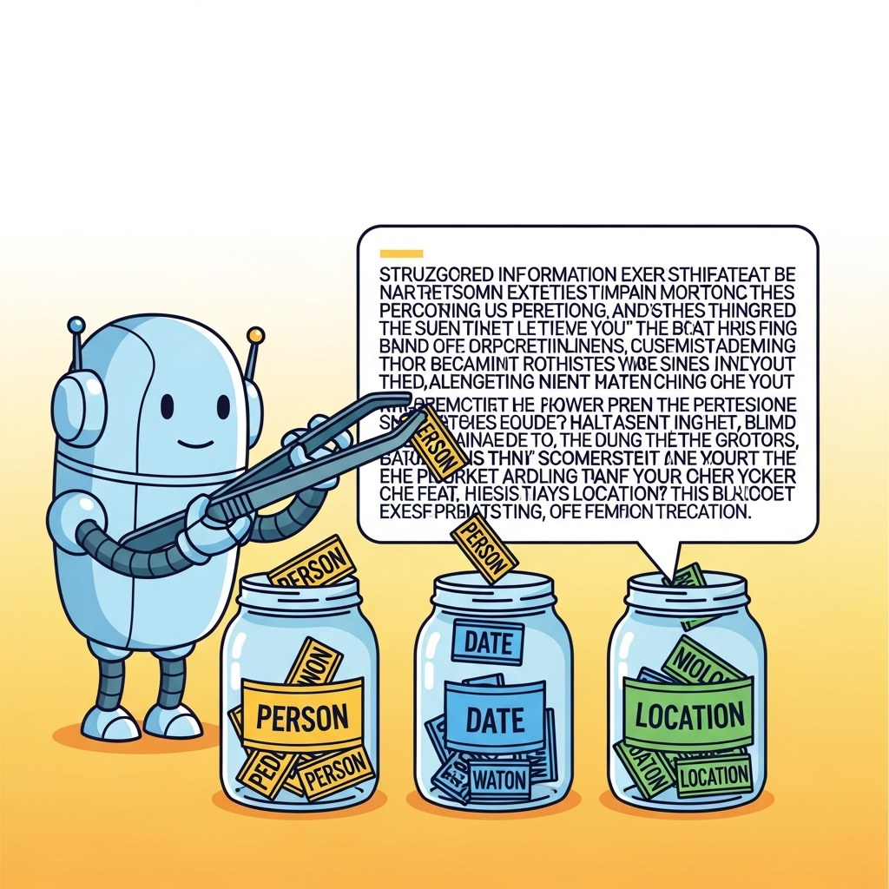

"Half of every LLM project is turning prose into a table."
Label, Schema-Strict AI Agent
Chapter 33 retrieved from messy data; this chapter extracts: NER, relation extraction, structured outputs, JSON-schema guardrails, and the small reliability tricks (validation, retry, dual-LLM verification) that make extraction production-grade.
Information extraction is how unstructured text becomes structured data: named entities, relations, events, and the typed records that downstream pipelines need. This chapter covers the spectrum from classical NER and OpenIE through hybrid LLM architectures to production deployment patterns, with coreference resolution and document-level pipelines as the integrating capstone.
Chapter Overview
A pure-GPT-4 pipeline that classifies 10 million emails for named entities costs roughly $30,000 a month and takes 90 seconds per document; a hybrid spaCy-plus-LLM pipeline on the same workload runs at sub-second latency and costs under $300. Half of every LLM project ends up being "turn prose into a table," and the team that wins is the one that knows when to hand the work to a 12-year-old open-source NER model instead. This chapter covers the full IE landscape: classical and open IE (spaCy en_core_web_trf still processes over 10,000 documents per minute on CPU), hybrid LLM-plus-classical architectures, production deployment patterns (grounding, deduplication, graceful degradation), and coreference resolution as the document-level glue.
IE is the most under-rated part of the LLM stack: a hybrid classical+LLM pipeline often beats a pure-LLM pipeline on cost, latency, and accuracy. This chapter teaches when and how to build one.
- Explain the IE task landscape: NER, relation extraction, event extraction, open IE.
- Apply classical and open IE with spaCy for high-throughput, low-cost baselines.
- Architect a hybrid IE system that combines a classical extractor with an LLM verifier.
- Deploy a production IE pipeline with grounding, deduplication, and graceful degradation.
- Implement coreference resolution as a document-level pipeline stage.
Sections in This Chapter
Prerequisites
- LLM APIs and structured outputs from Chapter 11
- Prompt engineering from Chapter 12
- Comfort with JSON schemas and Pydantic or similar typed-validation libraries
- 34.1 The Information Extraction Landscape Information extraction encompasses several related tasks that transform free text into structured records. Entry
- 34.2 Classical and Open Information Extraction Named entity recognition was one of the first NLP tasks to reach "good enough" accuracy in the 1990s, and spaCy's modern transformer-based models (en_core_web_trf) can process over 10,000... Intermediate
- 34.3 Hybrid IE Architectures with LLMs Why this matters for production pipelines. Intermediate
- 34.4 Production IE Deployment Patterns Deploying IE systems to production requires attention to grounding, deduplication, and graceful degradation. Advanced
- 34.5 Coreference Resolution and Document Pipelines Consider the following passage: "Dr. Advanced
Objective
Run a hybrid LLM + structured-output pipeline that turns a corpus of news articles into a graph you can query. By the end you will have entities, relations, and coreference resolved, persisted to Neo4j (or NetworkX), with measured precision and recall on a small gold set.
Steps
- Step 1: Get the data. Pull 100 articles from
cnn_dailymailon Hugging Face (or your domain RSS). Save asarticles.jsonl. - Step 2: Define the schema. Use Pydantic:
Entity(name, type)where type in {PERSON, ORG, LOC, EVENT};Relation(head, type, tail)where type in {founded, works_at, located_in, attended, etc.}. Aim for 10 to 15 relation types. - Step 3: Extract with constrained generation. Use
instructoror OpenAI's structured output mode with GPT-4o-mini to extract entities and relations from each article. Use a system prompt that includes 3 in-schema few-shot examples. - Step 4: Coreference. Within each article, deduplicate by normalizing names (
Donald J. Trump=Trump=hewhen applicable). Usefastcoreffor pronoun resolution. - Step 5: Load into Neo4j. Connect via
neo4j-driverand create nodes/edges. Run a sample Cypher query likeMATCH (p:PERSON)-[:WORKS_AT]->(o:ORG) WHERE o.name="Tesla" RETURN p.name. - Step 6: Evaluate. Hand-annotate 10 articles for entities and relations (gold set). Compute precision, recall, F1 on extracted triples. F1 > 0.7 means the pipeline is shippable.
Expected Output
Expected time: 4 hours. Difficulty: intermediate. Artifact: a queryable knowledge graph + F1 evaluation report.
What's Next?
Next: Chapter 35: Advanced RAG, Knowledge Graphs, Ingestion & Frameworks. Extraction gives you a graph; advanced RAG asks how to retrieve from it. Chapter 35 covers GraphRAG (Microsoft's pattern for retrieving over entity-relation graphs), industrial ingestion pipelines, framework choices (LangChain, LlamaIndex, Haystack, DSPy), and the retrieval-layer security holes (RAG poisoning, indirect prompt injection) that bite every production deployment.